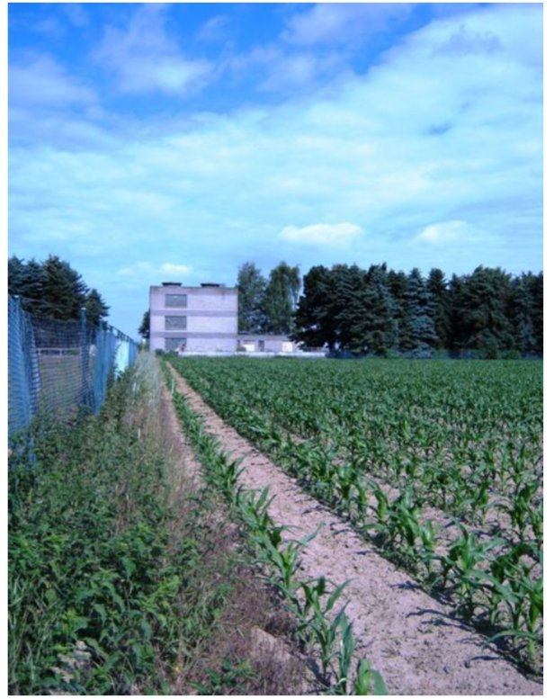

After travelling through the buried pipeline from Tiefbrunnen 2, the raw groundwater reaches the treatment hall of Wasserwerk Breyell (Lobberich). The transition from outdoor to indoor framing marks the boundary between the field-scale mobilisation processes (Scenes 2–6) and the chemical immobilisation processes within the filter train (Scenes 8–9).

treatment hall
Wasserwerk Breyell (Lobberich) treatment hall
Pre-filter and post-filter stages are housed inside the building. Raw water enters from the buried pipeline.
7 · waterworks exterior approach
Figure (Scene 7). Photograph of the Wasserwerk Breyell (Lobberich) treatment hall taken from the perimeter of the well-field property, Niederrhein, Germany. The maize crop in the foreground reproduces the agricultural land-use context established in Scene 1; the building behind the fence houses the two-stage filter train (Druckfilter and spray-aerated open Nachfilter) examined in Scene 8 and the spent-filter sampling campaigns documented in thesis Abb. 4.3 to Abb. 4.7 (Kandemiroglu, 2011). Photograph by Osman Can Kandemiroglu.